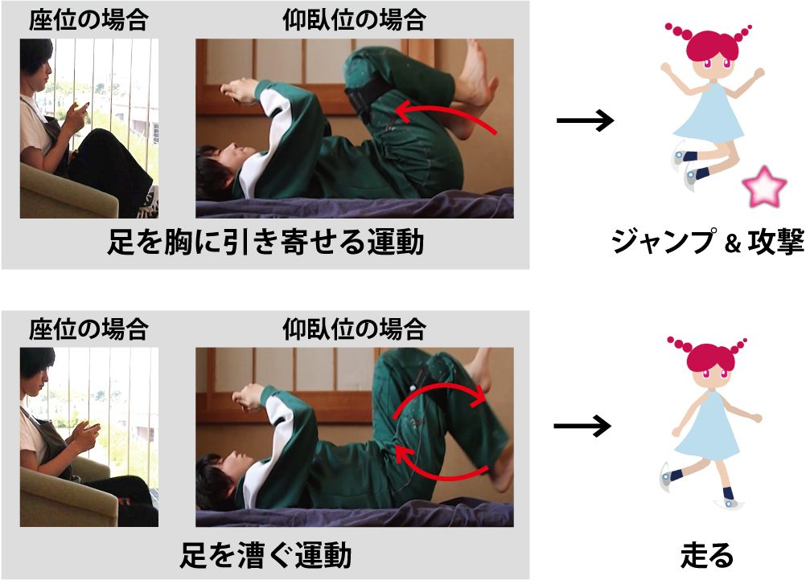
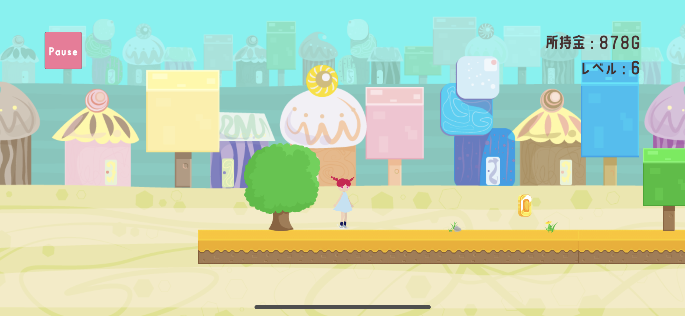
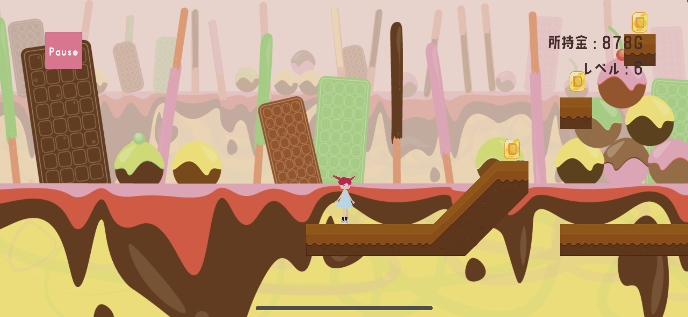
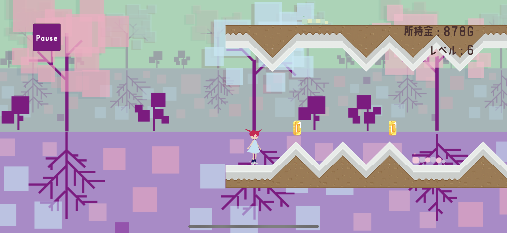
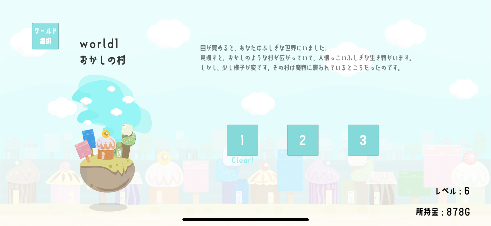

Featured Research
起立性調節障害の長期化防止に向けたシリアスゲーム
本研究では、起立性調節障害の長期化防止のためのゲームを制作し、その効果を検証しています。 治療に効果があるとされている足の運動を、ゲームの入力動作として用いています。
研究背景
近年、起立時にめまいや動悸などが起きる自律神経の病気である起立性調節障害（略称：OD）の症状が長期化するケースが増加しています。この病気は中高生に多く見られることからも、症状の長期化は不登校などの深刻な状況を招く恐れがあります。 また、起立性調節障害長期化の背景には、デコンディショニングという「長期間運動しないことによる身体機能の低下」があるとされています。この状態に陥る背景に、ゲームやテレビ、SNSなどの屋内娯楽が指摘されています。例えば、起立性調節障害を発症し、「しんどいから家で休んでゲームでもしていよう」などとなってしまい、その結果デコンディショニングに陥ってしまうのです。 デコンディショニングの解消のためには運動が推奨されています。こうしたことからも、この病気の治療方法の一つとして運動療法は有効であると言わていますが、起立性調節障害を抱える子どもの多くはその症状からも立った姿勢での運動は難しく、運動に対するモチベーションがあまり高くないと言われています。
関連研究
参考にした研究を一部ピックアップし、「OD関連」と「ゲーム関連」の2つの視点からご紹介します。
OD関連
- 健康な若者であっても、10日間ベッドで寝ていると、起立性不耐症（大人版OD）を引き起こすデコンディショニング状態に陥る。 (Measurement of inferior vena cava diameter for evaluation of venous return in subjects on day 10 of a bed-rest experiment. Yuko Ishizaki, Hideoki Fukuoka, Tatsuro Ishizaki, et al. 2004.)
- 横になった/半身起こした/座った姿勢での下肢の運動はODに効果的だが、「患者の運動へのモチベーション維持」に課題。 (起立性調節障害とデコンディショニング-運動の重要性を語ろう-. 柳夲嘉時. 2020.)
こうした研究から、「ODの放置は問題であり、治療には下肢の運動が有効な一方で、モチベーションの維持に課題がある」ということがよく分かります。
ゲーム関連
- Exergame（運動を用いたゲーム）が治療に対するモチベーション維持に効果を示している。(A Comparative Study on the Effectiveness of Adaptive Exergames for Stroke Rehabilitation in Pakistan. Hassan Ali Khan, Murayyiam Parvez, Suleman Shahid, Asbar Javaid. 2018)
この研究以外にも、ゲームを用いてリハビリへのモチベーションを維持したり、病気の治療における苦痛を和らげる事例は複数存在しています。そうしたことからもゲームはモチベーションの維持に効果があるのではないかと考えました。
これらの研究を踏まえ、本研究では、OD患者の運動に対するモチベーションを 維持するためのシリアスゲーム（娯楽目的以外のゲーム）を開発しました。 ODの症状により立ったまま運動することが困難な患者に対しゲーム内では横になった 姿勢または座った姿勢でできる足の運動を入力に使用しました。
制作
ゴールを目指して走る、シンプルな2D横スクロールアクションゲームです。 スマートフォンを手に持ってプレイします。また、ゲームは足の運動と連動していて、足を漕ぐ運動でゲーム内のキャラクターが走り、胸に引き寄せる運動でジャンプします。 これらの運動をしながら、プレイヤーはゴールを目指します。道中、コインを拾ったり敵を倒すことで、お金を集めます。 集めたコインを使用することで、物語を読むことができます。






対象となる年齢や性別（ODは中高生女子に多い）を意識したゲームデザインにしました。 また、画面酔いを防止するため、ゲームは2Dで作成しました。 飽きを防止するため、5つのワールドとそれぞれに付随する3つのステージの、計15ステージを制作しました。 運動のしすぎによる疲労の防止や、ODの治療には毎日数分の運動をすることが求められていることから、各マップ2~3分でクリアできるように、マップをデザインしています。
課題
制作したゲームは短時間の運動に対しては、運動時の意識をポジティブに変化させるとして一定の効果を示しました。 しかし、実際の治療を考えると継続的に取り組んでもらうことが重要になります。また、それはプレイヤーが自発的に取り組めることが望ましいです。
そこで、「プレイヤーキャラクターがレベルアップする」や「コンテンツを収集することができる」といった 特定のゲーム内の要素の有無によってプレイ時間がどう変わるかを検証しました。健常者を対象とした検証では、これらの要素が継続性にある程度効果を示しているとわかりました。
実際のOD患者に対しても長期のプレイを試みてもらったところ、主に「運動検出に用いているセンサ装着の手間」が原因の一つとなり長期のプレイには至りませんでした。 そのため、現在は特にセンサ不要（スマホのみ）での運動検出に着目し、開発・検証に取り組んでいます。
本研究に関する発表・論文
- 起立性調節障害患者を対象にした運動への意識向上のためのシリアスゲーム開発
- Towards Wearable-Free Exergame for Orthostatic Dysregulation: Improving Motion Detection with Smartphone - Only Calibration
- 起立性調節障害患者の運動を促すシリアスゲーム開発における多周波数超音波センシングを用いたスマートフォン単体での下肢運動検出の検討
- Impact of Level-up Element in Development of Exergame for Preventing Prolonged Orthostatic Dysregulation
- 起立性調節障害の長期化防止に向けたシリアスゲーム制作におけるプレイヤーのレベルアップ要素が与える影響の検証
- Development of Exergame to Resolve Deconditioning in Children with Orthostatic Dysregulation
- 起立性調節障害の長期化防止に向けたシリアスゲームの提案